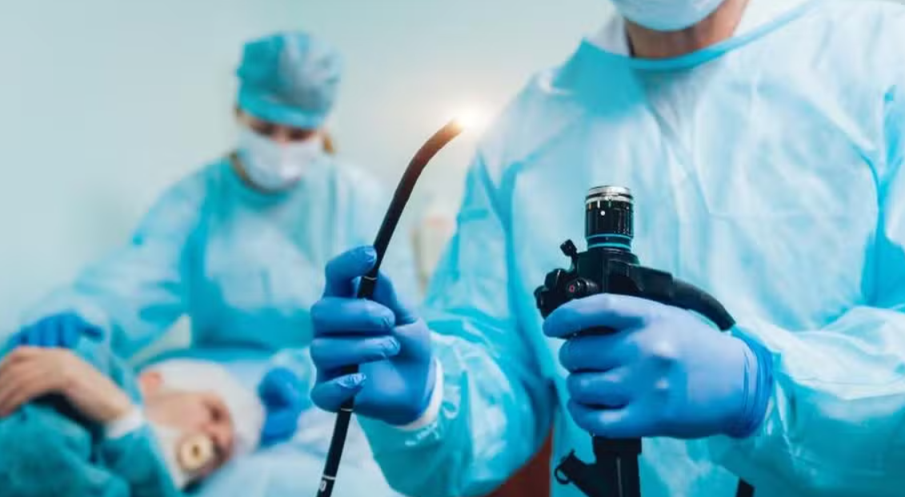

A endoscopia digestiva alta é um exame de imagem que possibilita a avaliação, diagnóstico e tratamento gastrointestinal. Através dele, é possível captar imagens do esôfago, estômago e duodeno, oferecendo uma visão detalhada das estruturas internas, permitindo aos médicos identificar anormalidades e realizar as intervenções necessárias.O exame é realizado por meio de um endoscópio (tubo flexível com uma câmera na ponta), introduzido na boca do paciente de modo a percorrer todo o trato gastrointestinal, tornando possível o rastreio e identificação de algumas doenças como gastrite, esofagite, refluxo gastroesofágico, além de diagnosticar precocemente alguns tipos de câncer.
O Dr. Herbeth Toledo, Presidente da Sociedade Brasileira de Endoscopia Digestiva (SOBED), explica que: “o exame é realizado sob sedação, que pode ser consciente ou profunda, realizada por dois médicos, geralmente 02 endoscopistas ou um endoscopista e um anestesista. Desta forma, o exame é indolor e permite toda a avaliação da mucosa da parede do esôfago, do estômago e do duodeno”.
{kind=link}